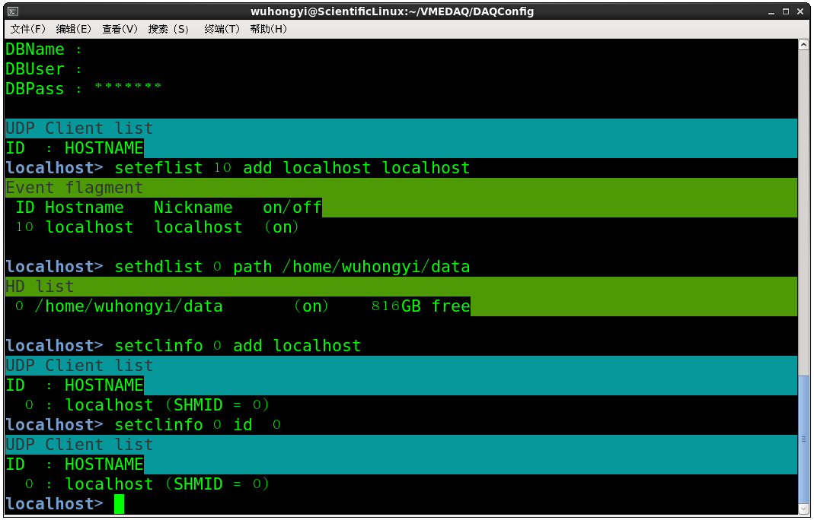

软件安装¶
本页面安装软件放置在 source 文件夹内，里面包括获取驱动、依赖库等以及自动安装脚本。
系统要求¶
本获取经过 Scientific Linux 6/7 系统测试。建议采用 CentOS 6/7 或者 Scientific Linux 6/7。
本获取要求 CERN ROOT 5/6，建议优先选择 ROOT 6。
如果没有合适的系统，可参考我们的获取系统安装 Install Scientific 7。安装好系统之后，还需要对基础依赖工具做一些安装及升级，可以下载执行自动化安装脚本自动配置或者按照教程手动安装。
CAEN Lib¶
本程序依赖 CAENVMELib/CAENComm/CAENUpgrader 三个库文件。
其中 CAENVMELib/CAENComm 为获取运行必须的库。CAENUpgrader 用来更新固件。
进入 source 文件夹内，在 ROOT 权限下执行 setup.sh 脚本，将会自动安装以上三个依赖库。
# 在 source 文件夹内，ROOT 权限下执行以下命令
sh setup.sh #需要ROOT权限
检查CAENVMELib安装¶
进入 CheckRegisterToolByV2718 文件夹，make 编译里面程序，如果生成一个名为 pku 的可执行文件，则软件安装成功。
cd CheckRegisterToolByV2718
make
V1718¶
如果您使用 V1718，则需要安装 USB 驱动。
tar -xzvf CAENUSBdrvB-1.5.2.tgz
cd CAENUSBdrvB-1.5.2
make
make install #需要ROOT权限
A2818驱动¶
如果您使用 A2818，则安装以下驱动。
# A2818Drv-1.20-build20161118.tgz
#将该文件夹复制到 /opt 并安装在该位置
tar -zxvf A2818Drv-1.20-build20161118.tgz
cp -r A2818Drv-1.20 /opt #需要ROOT权限
cd /opt/A2818Drv-1.20 #需要ROOT权限
cp ./Makefile.2.6-3.x Makefile #需要ROOT权限
make #需要ROOT权限
#设置开机自动执行该脚本
#在文件 /etc/rc.d/rc.local 中添加以下一行内容
/bin/sh /opt/A2818Drv-1.20/a2818_load
#或者在开启电脑之后执行以上命令
重启机箱后，在终端内输入 dmesg|grep a2818 将会看到以下的A2818驱动加载信息
a2818: CAEN A2818 CONET controller driver v1.20s
a2818: Copyright 2004, CAEN SpA
pci 0000:05:02.0: enabling device (0000 -> 0003)
pci 0000:05:02.0: PCI INT A -> GSI 19 (level, low) -> IRQ 19
a2818: found A2818 adapter at iomem 0xf7800000 irq 0, PLX at 0xf7900000
a2818: CAEN A2818 Loaded.
a2818: CAEN A2818: 1 device(s) found.
A3818驱动¶
如果您使用 A3818，则安装以下驱动。安装该驱动时，电脑机箱必须插入 A3818 卡，否则将会报安装失败。
tar -zxvf A3818Drv-1.6.1.tgz
cd A3818Drv-1.6.1
make
make install #需要ROOT权限
然后在终端内输入 dmesg 将会看到以下的A3818驱动加载信息
fuse init (API version 7.14)
CAEN A3818 PCI Express CONET2 controller driver v1.6.0s
Copyright 2013, CAEN SpA
pci 0000:02:00.0: PCI INT A -> GSI 16 (level, low) -> IRQ 16
alloc irq_desc for 33 on node -1
alloc kstat_irqs on node -1
pci 0000:02:00.0: irq 33 for MSI/MSI-X
pci 0000:02:00.0: setting latency timer to 64
Found A3818 - Common BAR at iomem ffffc900067d4000 irq 0
Found A3818 with 1 link(s)
found A3818 Link 0 BAR at iomem ffffc900067d6000 irq 0
CAEN A3818 Loaded.
CAEN PCIe: 1 device(s) found.
RIKEN babirl¶
babirl自动化安装方法
#在个人用户目录下安装理研babirl库
#在普通权限下执行以下脚本
sh autoinstallbabirl.sh
#会自动添加环境变量 安装结束后查看 .bashrc 文件，最后将多了三行如下内容
PATH=$PATH:/home/wuhongyi/babirl/bin/
export TARTSYS=/home/wuhongyi/VMEDAQ/anaroot
export LD_LIBRARY_PATH=$LD_LIBRARY_PATH:$TARTSYS/lib:$TARTSYS/sources/Core
#在ROOT权限下执行以下脚本
sh afterinstallbabirl.sh [user name] #需要ROOT权限
#其中这里的 [user name] 换成你的帐号用户名，例如我的用户名为wuhongyi
# sh afterinstallbabirl.sh wuhongyi
初始化babicon¶
执行 DAQConfig 中的 StartDAQ.sh 开启进程
运行babicon(安装后第一次需输入以下初始化)
新打开一个终端，然后输入
babicon
回车之后将看到以下界面
 babicon
babicon
以下进行基本的变量设置
seteflist 10 add localhost localhost
sethdlist 0 path /home/wuhongyi/data #这里为数据存储路径
setclinfo 0 add localhost #localhost为本机器
setclinfo 0 id 0
#如果设置给远程电脑
setclinfo 0 add [ip] #[ip] 为接收端电脑IP
setclinfo 0 id 0
babicon setting
防火墙设置¶
将共享数据发送到Online电脑，需要做以下设置或者关闭防火墙
对Scientific Linux 6，终端ROOT权限下输入setup，选择防火墙配置，去掉启用。对cientific Linux 7，ROOT权限下终端输入以下信息关闭firewall
systemctl stop firewalld.service #停止firewall
systemctl disable firewalld.service #禁止firewall开机启动
firewall-cmd --state #查看默认防火墙状态（关闭后显示notrunning，开启后显示running）
如果机器不联网，可以不需要开启以下iptables防火墙，反正不会被黑
#在 /etc/sysconfig/iptables 添加以下一行（不能放到最后一行，其中IP替换为发送DAQ电脑的IP）
-A INPUT -p udp -m state --state NEW -m udp --dport 17500:17510 -s 222.29.111.201 -j ACCEPT
之后在ROOT权限下执行以下命令
systemctl restart iptables.service #最后重启防火墙使配置生效
systemctl enable iptables.service #设置防火墙开机启动